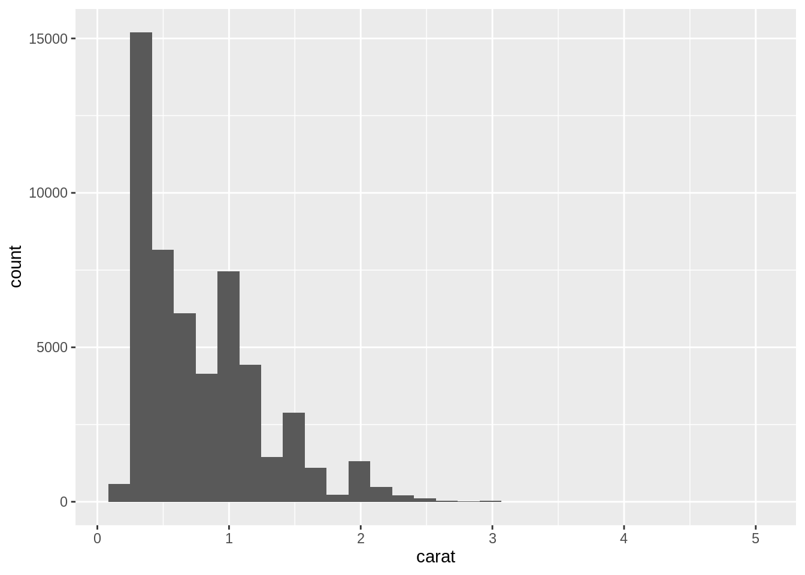

library(nycflights13)
library(dplyr)
# Correct
out <- left_join(flights, airlines)
#> Joining with `by = join_by(carrier)`
# Incorrect
out <- left_join(flights, planes)
#> Joining with `by = join_by(year, tailnum)`
# Error
out <- left_join(flights, airports)
#> Error in `left_join()`:
#> ! `by` must be supplied when `x` and `y` have no common variables.
#> ℹ Use `cross_join()` to perform a cross-join.20 Explain important defaults
20.1 What’s the pattern?
If a default value is important, and the computation is non-trivial, inform the user what value was used. This is particularly important when the default value is an educated guess, and you want the user to change it. It is also important when descriptor arguments (Chapter 6)) have defaults.
20.2 What are some examples?
-
dplyr::left_join()and friends automatically compute the variables to joinbyas the variables that occur in bothxandy(this is called a natural join in SQL). This is convenient, but it’s a heuristic so doesn’t always work. -
readr::read_csv()reads a csv file into a data frame. Because csv files don’t store the type of each variable, readr must guess the types. In order to be fast,read_csv()uses some heuristics, so it might guess wrong. Or maybe guesses correctly today, but when your automated script runs in two months time when the data format has changed, it might guess incorrectly and give weird downstream errors. For this reason,read_csv()prints the column specification in a way that you can copy-and-paste into your code.library(readr) mtcars <- read_csv(readr_example("mtcars.csv")) #> Rows: 32 Columns: 11 #> ── Column specification ──────────────────────────────────────────────────────── #> Delimiter: "," #> dbl (11): mpg, cyl, disp, hp, drat, wt, qsec, vs, am, gear, carb #> #> ℹ Use `spec()` to retrieve the full column specification for this data. #> ℹ Specify the column types or set `show_col_types = FALSE` to quiet this message. -
In
ggplot2::geom_histogram(), thebinwidthis an important parameter that you should always experiment with. This suggests it should be a required argument, but it’s hard to know what values to try until you’ve seen a plot. For this reason, ggplot2 provides a suboptimal default of 30 bins: this gets you started, and then a message tells you how to modify.library(ggplot2) ggplot(diamonds, aes(carat)) + geom_histogram() #> `stat_bin()` using `bins = 30`. Pick better value with `binwidth`.
-
When installing packages,
install.packages()informs of the value of thelibargument, which defaults to.libPath()[[1]]:install.packages("forcats") # Installing package into ‘/Users/hadley/R’ # (as ‘lib’ is unspecified)This, however, is not terribly important (most people only use one library), it’s easy to ignore this amongst the other output, and the message doesn’t refer to the mechanism that controls the default (
.libPaths()).
20.3 Why is it important?
There are two ways to fire a machine gun in the dark. You can find out exactly where your target is (range, elevation, and azimuth). You can determine the environmental conditions (temperature, humidity, air pressure, wind, and so on). You can determine the precise specifications of the cartridges and bullets you are using, and their interactions with the actual gun you are firing. You can then use tables or a firing computer to calculate the exact bearing and elevation of the barrel. If everything works exactly as specified, your tables are correct, and the environment doesn’t change, your bullets should land close to their target.
Or you could use tracer bullets.
Tracer bullets are loaded at intervals on the ammo belt alongside regular ammunition. When they’re fired, their phosphorus ignites and leaves a pyrotechnic trail from the gun to whatever they hit. If the tracers are hitting the target, then so are the regular bullets.
I think this is a valuable pattern because it helps balance two tensions in function design:
Forcing the function user to really think about what they want to do.
Trying to be helpful, so the user of function can achieve their goal as quickly as possible.
Often your thoughts about a problem will be aided by a first attempt, even if that attempt is wrong. Helps facilitate iteration: you don’t sit down and contemplate for an hour and then write one perfectly formed line of R code. You take a stab at it, look at the result, and then tweak.
Taking a default that the user really should carefully think about and make a decision on, and turning it into a heurstic or educated guess, and reporting the value, is like a tracer bullet.
The counterpoint to this pattern is that people don’t read repeated output. For example, do you know how to cite R in a paper? It’s mentioned every time that you start R. Human brains are extremely good at filtering out unchanging signals, which means that you must use this technique with caution. If every argument tells you the default it uses, it’s effectively the same as doing nothing: the most important signals will get buried in the noise. This is why you’ll see the technique used in only a handful of places in the tidyverse.
20.4 How can I use it?
To use this message you need to generate a message from the computation of the default value. The easiest way to do this to write a small helper function. It should compute the default value given some inputs and generate a message() that gives the code that you could copy and paste into the function call.
Take the dplyr join functions, for example. They use a function like this:
common_by <- function(x, y) {
common <- intersect(names(x), names(y))
if (length(common) == 0) {
stop("Must specify `by` when no common variables in `x` and `y`", call. = FALSE)
}
message("Computing common variables: `by = ", rlang::expr_text(common), "`")
common
}
common_by(data.frame(x = 1), data.frame(x = 1))
#> Computing common variables: `by = "x"`
#> [1] "x"
common_by(flights, planes)
#> Computing common variables: `by = c("year", "tailnum")`
#> [1] "year" "tailnum"The technique you use to generate the code will vary from function to function. rlang::expr_text() is useful here because it automatically creates the code you’d use to build the character vector.
To avoid creating a magical default (Chapter 19), either export and document the function, or use one of the techniques in Chapter 9:
left_join <- function(x, y, by = NULL) {
by <- by %||% common_by(x, y)
}